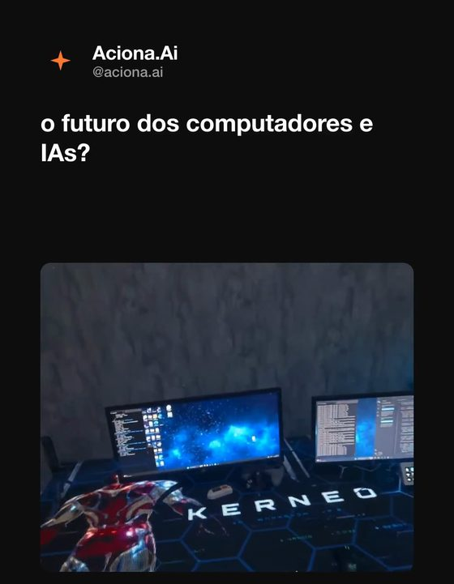

1 · O que o Victor faz nessa skill
O Victor é o Editor de Vídeo do time. Esta skill é o Modelo 1 (estilo "post/tweet"): pega um vídeo que já existe na internet e o remonta no template oficial — header com logo redonda + @ do cliente, uma legenda simples (o gancho) e o vídeo recortado/centralizado, fundo branco (padrão) ou preto.
O que ele CONSEGUE entregar:
- 🎬
reels.mp41080×1920 no template MediaGrowth (ou na marca do cliente: cores, logo redonda e @ próprios). - ✍️ Gancho viral na peça — clickbait honesto, simples, que faz a pessoa parar e querer ver.
- 📝 Legenda completa pra postar (
legenda_redes) — conecta com o conteúdo real do vídeo, diz quem é o cliente e o que faz, e fecha com CTA + hashtags do nicho. - ✂️ Vídeo recortado pra tirar marca d'água de terceiros, barras pretas e UI/legendas originais do post.
- 🖌️ Reels editável no chat — botão ✏️ Editar abre um editor WYSIWYG (troca fundo, cor do texto, legenda, recorte e posição do vídeo).
- 🎯 Descoberta automática do cliente — identifica de qual cliente é o reels antes de gerar (não defaulta pra MediaGrowth).
CLIENTE.md, ele bloqueia e pergunta; e não publica nas redes (só entrega o .mp4 + a legenda pronta pra você postar).2 · Tudo que você pode pedir (variáveis)
Você não precisa decorar comando. Fala natural e manda o link. Estas são as variáveis que mudam o resultado:
3 · Como funciona + como tirar o melhor
Por dentro, ele segue um fluxo fixo (você só precisa do link e do resultado — os passos rodam sozinhos):
- Descobre de qual cliente é o reels antes de tudo (pela mensagem e, se preciso, pela transcrição) — em dúvida, te pergunta com
[APPROVE], nunca crava MediaGrowth calado. - Baixa o vídeo do link e extrai transcrição, frames e o contexto da fonte; puxa a marca do cliente (paleta, @ e logo redonda) do
CLIENTE.md. - Entende o vídeo — lê a transcrição e os frames pra captar o gancho, o clímax e por que ele existe.
- Escreve o gancho viral (curto, simples, que faz parar) e a legenda completa (conecta com o conteúdo real + quem é o cliente + CTA de engajamento + hashtags do nicho).
- Define o recorte pra tirar marca d'água, barras pretas e UI original — quadro final limpo.
- Renderiza o
reels.mp4(com checagem de acentos PT-BR) e deixa editável no chat (editor WYSIWYG).
Como tirar o MÁXIMO dele:
- Diga o cliente no pedido — é o jeito mais rápido de já sair na identidade certa (cores, @ e logo).
- Mande o contexto que só você sabe ("é o lançamento novo", "foca no diferencial X") — ele cruza com a transcrição e melhora o gancho.
- Confie no gancho simples: legenda curta que aguça curiosidade converte mais — o vídeo faz o resto. Foge do tom técnico/manual.
- Use o ✏️ Editar no chat pra ajuste fino: fundo, cor do texto, legenda e, principalmente, o recorte e a posição do vídeo, ao vivo.
- Reaproveite a
legenda_redespronta na hora de postar — já vem com referência ao vídeo, quem é o cliente, CTA e hashtags. - Quando terminar de editar, use o ✅ Finalizar pra limpar os arquivos intermediários e ficar só com o
reels.mp4(irreversível: encerra a edição).
4 · Quais respostas esperar
Ele entrega o vídeo direto no chat, com os botões de edição embutidos, salvo na pasta do cliente em reels/<slug>/v1.0/:
- 🎬
reels.mp41080×1920 — header (logo redonda + @) + legenda gancho + vídeo recortado e centralizado, fundo branco/preto. - 📝
legenda_redesem bloco copiável — legenda completa pronta pra postar, complementando o gancho (não repete). - ✏️ Botão Editar no card do vídeo — editor WYSIWYG: fundo, cor do texto, legenda, nome, @ e o recorte/posição do vídeo, tudo ao vivo.
- ✅ Botão Finalizar — limpa os intermediários e deixa só o
reels.mp4(irreversível: encerra a edição). - Cada nova edição versiona a anterior em
versoes/v{N}/antes de re-renderizar.
Confirmo que é da Aciona.IA, baixo o vídeo, leio a transcrição e os frames e monto o reels na identidade deles (cores + logo redonda + @).
Na peça (gancho): "Isso aqui parece mágica, mas é IA de verdade:"
Recorte: cortei a marca d'água do TikTok no rodapé e a barra preta de cima — quadro limpo.
Legenda pronta pra postar: amarro no que aparece no vídeo (agente de IA respondendo sozinho), digo que a Aciona.IA implementa agentes de IA em PMEs, e fecho com "Comenta aí: você deixaria uma IA atender seu cliente?" + hashtags.
No chat: mando o reels.mp4 com os botões ✏️ Editar e ✅ Finalizar.
CLIENTE.md, ele bloqueia e te pergunta em vez de chutar. E o reels só vira de um cliente quando esse cliente é confirmado — nunca defaulta pra MediaGrowth calado.📸 Exemplo real do resultado
Exemplo real do reel viral Modelo 1 (Simples) feito para a Aciona.Ai a partir de um link de rede social, montado no template MG vertical 1080×1920.

🔍